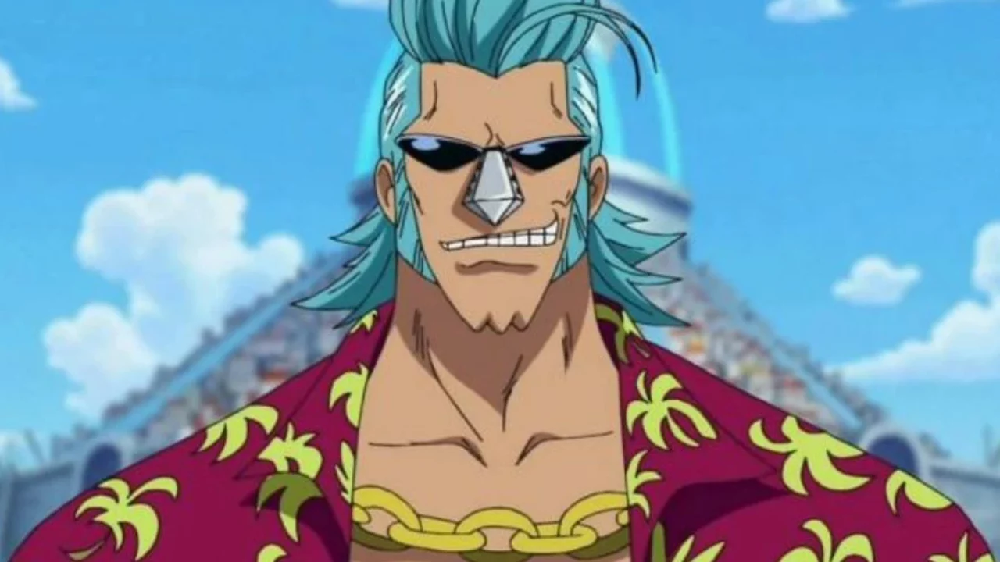
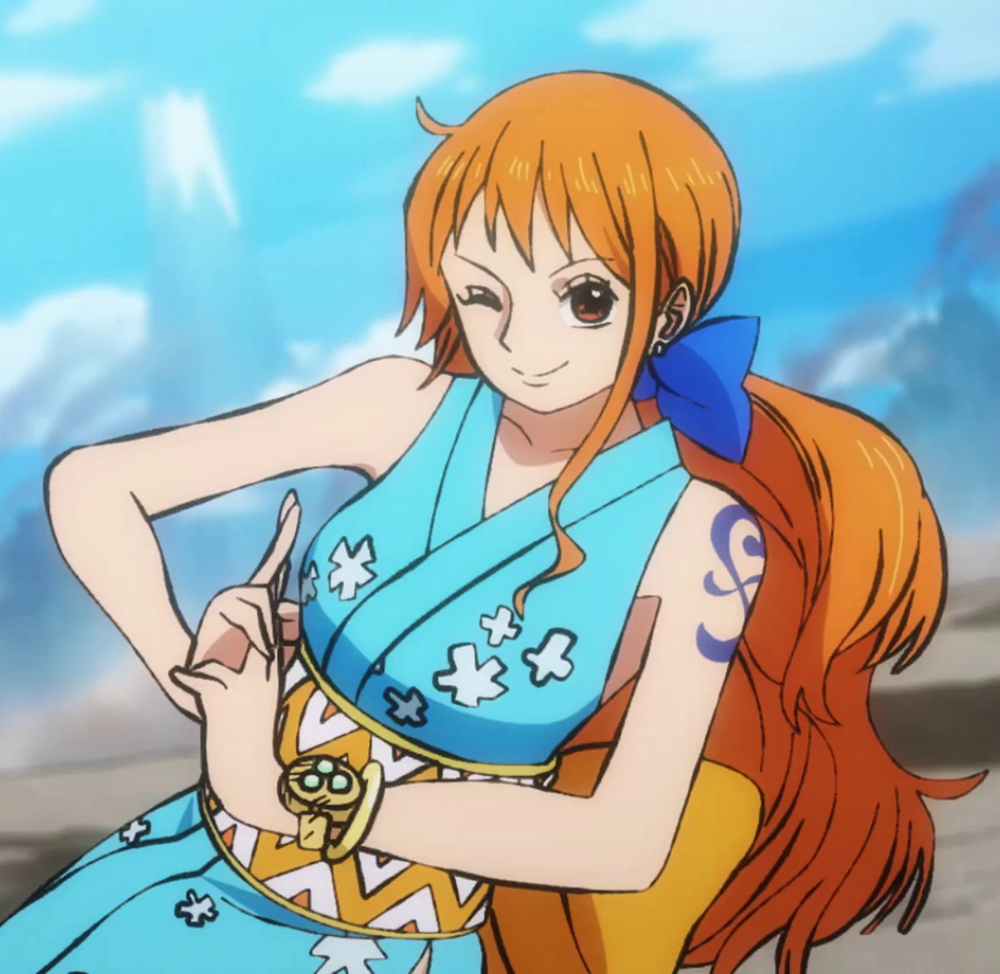
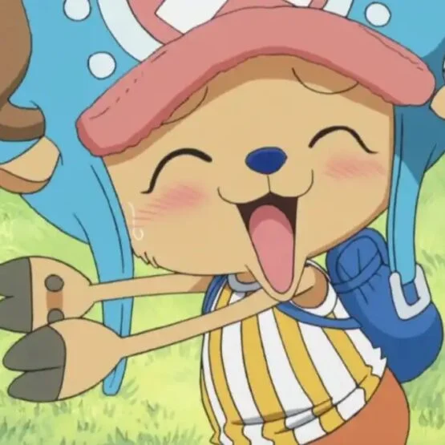
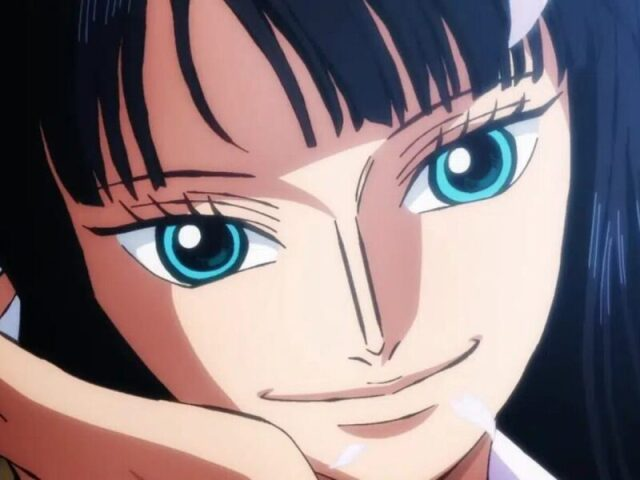
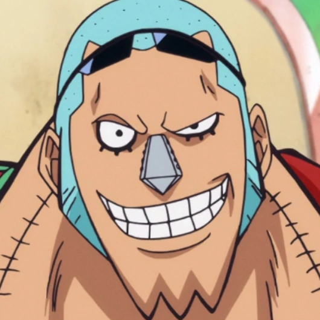
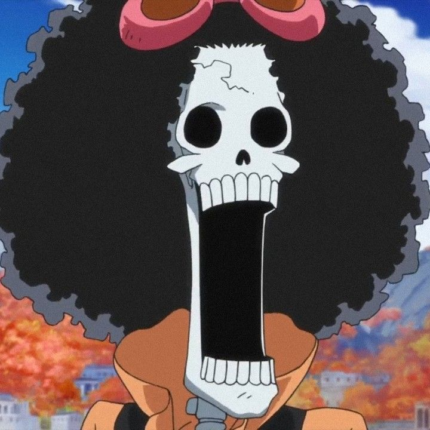
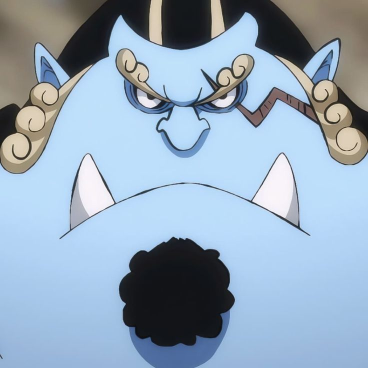

""Não pense que perdeu tudo, você não pode ignorar aquilo que ainda não perdeu. O que é aquilo que você ainda tem?""
Chopper
""Eu não me importo agora. Eu queria parecer humano, porque queria proteger meus amigos. Agora eu quero me tornar um monstro que é útil para Luffy!"
"

Franky
"Supeeeeeeeeeeeeeerrrrrr" -
ㅤMonkey D. Luffy
Monkey D. Luffy, também conhecido como "Luffy do Chapéu de Palha" e comumente como "Chapéu de Palha", é o fundador e capitão dos cada vez mais infames e poderosos Piratas do Chapéu de Palha, bem como o mais poderoso de seus melhores lutadores. Ele deseja encontrar o tesouro lendário deixado para trás pelo falecido Gol D. Roger e assim se tornar o Rei dos Piratas, o que ajudaria a facilitar um sonho desconhecido dele que ele contou apenas para Shanks, seus irmãos e tripulação. Ele acredita que ser o Rei dos Piratas significa ter a maior liberdade do mundo.
Nascido na Vila Foosha, Luffy acidentalmente comeu a Gomu Gomu no Mi aos 7 anos de idade, que deu ao seu corpo propriedades de borracha. Nesta época, Luffy conheceu Shanks, "o Ruivo", que lhe deu seu chapéu de palha como parte de uma promessa para que eles se encontrassem novamente. Luffy é o filho do líder Revolucionário Monkey D. Dragon, neto paterno do herói da Marinha Monkey D. Garp, irmão jurado do falecido "Punhos de Fogo" Portgas D. Ace e do chefe de gabinete Revolucionário Sabo, e filho adotivo de Curly Dadan. Ele é uma das poucas pessoas no mundo que carregam a Vontade de D.
Luffy enfrentou inúmeras forças globais que encontrou, começando contra os piratas mais poderosos do East Blue e avançando para confrontos contra a Marinha, os Shichibukai, a Cipher Pol, Nobres Mundiais e até mesmo os Yonkou, emergindo vitorioso na maior parte destes confrontos. Ele invadiu e indiretamente causou a destruição de Enies Lobby, escapou e causou uma fuga em massa em Impel Down, e foi uma figura central na Guerra de Marineford. Ele derrotou ou fez amizade com sete dos onze antigos Shichibukai, antes da dissolução da organização, e invadiu o território de dois Yonkou. As realizações e a herança familiar de Luffy fizeram com que ele fosse rotulado como um "Futuro Elemento Perigoso", enquanto ganhava a reputação de ser "imprudente" e, em alguns casos, "insano", ganhando a ira do Almirante da Frota Sakazuki, do Quartel-General da Marinha e até mesmo do Governo Mundial.
Luffy também tem uma propensão para atrair seguidores e, sem intenção, foi nomeado líder da Grande Frota do Chapéu de Palha, composta por sete tripulações piratas que juraram vir em seu auxílio sempre que ele desejasse. Depois de saber disso e de suas façanhas contra os Piratas da Big Mom, a imprensa rotulou Luffy como o "Quinto Imperador do Mar", embora muitas figuras proeminentes considerem isso um exagero. No entanto, após derrotar Kaidou no Arco País de Wano, Luffy foi oficialmente declarado Imperador pelo Governo Mundial, ao lado de Buggy, ambos ocupando os postos deixados por Kaidou e Big Mom.[17]
Tendo tido uma recompensa de Bsymbol300.000.000 antes de chegar ao Arquipélago de Sabaody, Luffy foi um dos onze "Supernovas", piratas que simultaneamente alcançaram a Red Line com recompensas acima de Bsymbol100.000.000 pouco antes da Guerra de Marineford. Ele, os outros dez Supernovas e Marshall D. Teach foram posteriormente referidos como a "Pior Geração". Eventualmente, suas conquistas e reputação contribuíram para sua atual recompensa de Bsymbol3.000.000.000.
Durante o confronto contra Kaidou, Rei das Feras, em Onigashima, foi revelado que a fruta de Luffy é uma Zoan Mítica, a Hito Hito no Mi Modelo: Nika, dando seu corpo propriedades de borracha e liberdade apenas limitada por sua imaginação. As capacidades novas desta fruta ainda são desconhecidas.
ㅤRoronoa Zoro
Roronoa Zoro é um dos personagens mais marcantes e icônicos do mundo da animação japonesa, sendo um dos membros principais da tripulação dos Chapéu de Palha em One Piece, uma obra magistral criada por Eiichiro Oda. Zoro é o espadachim destemido e leal da tripulação, com uma habilidade excepcional em técnicas de espada e uma determinação inabalável em alcançar seu sonho de se tornar o maior espadachim do mundo.
Desde a sua introdução na história, Zoro cativa os fãs com sua personalidade séria e dedicada. Seu estilo de luta é baseado em técnicas de três espadas, uma habilidade que o torna formidável em combate. Zoro é conhecido por carregar três espadas simultaneamente, técnica essa chamada de "Santoryu". Seu domínio dessa arte de luta o coloca em um nível elevado entre os espadachins no universo de One Piece.
O sonho de Zoro de se tornar o maior espadachim é profundamente enraizado em sua história pessoal. Ele carrega consigo a promessa de nunca perder novamente na vida, após falhar em proteger alguém importante em seu passado. Essa determinação implacável é o que impulsiona Zoro a treinar incessantemente, superar seus próprios limites e desafiar adversários cada vez mais poderosos.
Ao longo da jornada dos Chapéu de Palha, Zoro se depara com inúmeros desafios e adversários formidáveis. Sua ética de batalha e lealdade aos seus companheiros são admiráveis, tornando-o um verdadeiro protetor da tripulação. Sua relação com o capitão Monkey D. Luffy é particularmente especial, pois Zoro vê em Luffy um líder digno de confiança e respeito.
Além de suas habilidades marciais excepcionais, Zoro também é um estrategista astuto e um membro valioso da equipe. Sua capacidade de pensar rapidamente em situações difíceis e desenvolver estratégias eficazes contribui significativamente para o sucesso da tripulação dos Chapéu de Palha em suas inúmeras aventuras.
O design visual de Zoro também é digno de nota, com suas três espadas, bandana verde e olho esquerdo coberto por uma cicatriz profunda, resultante de um sacrifício que ele fez para proteger sua honra e a tripulação. Esses elementos tornam Zoro inconfundível e adicionam um toque de mistério ao seu personagem.
Ao longo das sagas de One Piece, Zoro enfrenta desafios físicos e emocionais, demonstrando um crescimento contínuo como espadachim e como pessoa. Sua história é uma jornada de autodescobrimento e superação, e os fãs se envolvem emocionalmente com o personagem, torcendo por seu sucesso e admirando sua força interior.
Em resumo, Roronoa Zoro é mais do que apenas um espadachim habilidoso; ele é um personagem complexo e cativante, cuja presença acrescenta profundidade e intensidade à narrativa de One Piece. Seu compromisso com seus sonhos, sua lealdade aos amigos e sua bravura no campo de batalha fazem dele um dos personagens mais queridos e respeitados não apenas em One Piece, mas em todo o mundo dos animes e mangás. O legado de Zoro como o "Caçador de Piratas" continua a crescer, deixando uma marca duradoura na imaginação dos fãs ao redor do mundo.

ㅤNami
Nami, a navegadora brilhante e astuta da tripulação dos Chapéu de Palha em One Piece, é uma personagem que se destaca não apenas pela sua habilidade em navegação, mas também por sua incrível determinação e evolução ao longo da história. Criada por Eiichiro Oda, Nami é essencial para a equipe, desempenhando um papel crucial na realização dos sonhos de seus companheiros e na navegação pelos mares perigosos do Grand Line.
A introdução de Nami na história se dá quando ela é apresentada como uma cartógrafa talentosa, porém, inicialmente, como uma navegadora relutante a juntar-se aos Chapéu de Palha. Sua motivação inicial é puramente egoísta, centrada em obter recursos para construir uma nave e escapar da perigosa Arlong Park, onde sua aldeia foi subjugada por um bando de piratas liderados por Arlong.
A jornada de Nami é marcada por desafios emocionais intensos, incluindo o confronto com seu passado traumático e a decisão de se aliar aos Chapéu de Palha para lutar contra a opressão de Arlong. A superação desses obstáculos a transforma de uma "ladra de mapas" egoísta em uma amiga leal, comprometida com a realização dos sonhos de seus companheiros e em protegê-los a qualquer custo.
A habilidade de Nami em navegação é inigualável. Seu talento em interpretar mapas, prever o clima e compreender as complexidades da Grand Line a torna uma peça fundamental na jornada dos Chapéu de Palha. Ela é responsável por traçar rotas seguras, evitando os muitos perigos que os mares oferecem. Além disso, a criação do Clima-Tact, um bastão que manipula o clima, evidencia sua engenhosidade e habilidade em se adaptar às situações mais desafiadoras.
A relação de Nami com os outros membros da tripulação é marcada por um profundo respeito mútuo. Sua conexão especial com Monkey D. Luffy, o capitão, é particularmente tocante, pois ele é alguém que a entende e apoia em todos os momentos. A história de Nami destaca a importância do apoio emocional e como a amizade pode curar feridas profundas.
O design de Nami é icônico, com seu cabelo ruivo e trajes característicos. Seus óculos em forma de laranja não apenas acrescentam um toque de estilo, mas também ressaltam sua natureza analítica e perspicaz. A tatuagem em seu braço, representando a liberdade que ela busca, é um símbolo poderoso de sua jornada.
Em resumo, Nami é uma personagem multifacetada e inspiradora. Sua história de superação, determinação e crescimento pessoal a torna uma figura querida para os fãs de One Piece. Nami não é apenas a navegadora habilidosa da tripulação; ela é a personificação da resiliência e da força feminina em um mundo de aventuras e pirataria. Sua presença continua a enriquecer a narrativa de One Piece, contribuindo para a construção de um dos universos mais envolventes e diversificados no mundo dos animes e mangás.
ㅤGod. Usopp
Usopp, o habilidoso atirador e contador de histórias dos Chapéu de Palha em One Piece, é um personagem que cativa os fãs com sua imaginação fértil, coragem inesperada e crescimento notável ao longo da jornada. Criado por Eiichiro Oda, Usopp é um membro valioso da tripulação, adicionando um toque de aventura e humor à narrativa.
O início da história de Usopp o apresenta como um mentiroso compulsivo e um sonhador incorrigível da vila de Syrup. Ele constantemente cria contos elaborados e fantasiosos para entreter os moradores locais, buscando escapar da realidade difícil da vila. Seu talento para a narrativa e a criação de histórias inspiradoras eventualmente se tornam uma ferramenta valiosa na construção da moral e na motivação da tripulação.
Usopp é um atirador habilidoso, usando sua pontaria excepcional para contribuir em combates à distância. Sua arma principal é a "Ginga Pachinko", uma estilingue especial que ele aprimora ao longo da história. A habilidade de Usopp em criar dispositivos e inovações tecnológicas, muitas vezes a partir de materiais improvisados, destaca sua engenhosidade e adaptabilidade em situações desafiadoras.
A evolução de Usopp como personagem é uma das mais notáveis em One Piece. Inicialmente retratado como alguém mais inclinado a evitar o confronto direto, ele gradualmente desenvolve coragem e determinação para enfrentar inimigos poderosos em nome da tripulação. Sua participação em eventos cruciais, como a luta contra os agentes da Baroque Works e a busca pelo "One Piece", evidencia seu amadurecimento como um membro essencial dos Chapéu de Palha.
A relação de Usopp com a tripulação é construída sobre uma base de amizade e respeito mútuos. Sua amizade especial com Luffy destaca-se, pois ambos compartilham uma visão otimista e acreditam no poder dos sonhos. A presença de Usopp adiciona uma dimensão única ao grupo, equilibrando os elementos sérios e cômicos da história.
O design de Usopp é distintivo, com sua aparência esguia, nariz proeminente e óculos redondos. Sua expressão facial é versátil, capaz de transmitir uma ampla gama de emoções, desde o pânico até a determinação. Essa versatilidade contribui para a natureza dinâmica do personagem.
Em resumo, Usopp é muito mais do que um simples atirador; ele é um contador de histórias, inventor e, acima de tudo, um membro valioso e querido da tripulação dos Chapéu de Palha. Sua jornada de autodescoberta e crescimento destaca a capacidade de superação presente em cada membro da tripulação. Usopp representa a importância de acreditar em si mesmo, enfrentar desafios de frente e, acima de tudo, nunca desistir dos próprios sonhos. Sua presença adiciona uma camada de profundidade emocional e humorística à narrativa de One Piece, conquistando o coração dos fãs ao redor do mundo.
ㅤSanji Vinsmoke
Sanji, o cozinheiro extraordinário dos Chapéu de Palha em One Piece, é um personagem que combina habilidades excepcionais nas artes culinárias com um estilo de luta único e uma paixão inabalável por proteger as mulheres. Criado por Eiichiro Oda, Sanji adiciona uma mistura de elegância, charme e força bruta à tripulação, tornando-se um dos membros mais carismáticos e amados da história.
O sonho de Sanji é se tornar o melhor cozinheiro do mundo, inspirado pela busca pela lendária "All Blue", um mar onde todos os peixes dos oceanos se reúnem, permitindo que ele crie pratos inigualáveis. Sua paixão pela culinária é tão intensa quanto sua aversão a usar as mãos em combate, uma característica que o torna único entre os membros da tripulação.
O estilo de luta de Sanji é o "Black Leg Style", uma técnica que utiliza chutes poderosos e ágeis. Sua perna direita é especialmente destacada, tornando-se uma poderosa ferramenta de combate. O uso exclusivo de chutes é uma escolha consciente, alinhada com o código de honra de Sanji de nunca usar as mãos em combate, uma promessa feita em homenagem ao treinamento que recebeu de um mestre na Ilha Kamabakka.
A personalidade de Sanji é caracterizada por seu comportamento cavalheiresco em relação às mulheres. Ele é conhecido por sua devoção e respeito, muitas vezes colocando a segurança e o bem-estar das mulheres acima de tudo, mesmo em situações perigosas. Sua relação especial com Nami, em particular, destaca-se como uma demonstração de sua lealdade e proteção.
A história de Sanji é aprofundada por eventos em seu passado, incluindo sua juventude difícil no Baratie, um restaurante flutuante. Seu relacionamento com Zeff, o chef principal do Baratie, desempenha um papel fundamental em sua formação, moldando sua ética de trabalho e seu código de honra. O sacrifício de Zeff e a influência dos eventos na Ilha Kamabakka contribuem para a complexidade de Sanji como personagem.
O design de Sanji é distintivo, com sua sobrancelha esquerda escondida por sua franja loira e o cigarro sempre presente. Seu traje elegante e postura confiante adicionam um toque de classe ao seu personagem, complementando sua natureza cavalheiresca.
Em resumo, Sanji é uma mistura única de habilidades culinárias excepcionais, habilidades de combate extraordinárias e um coração dedicado às mulheres. Sua presença na tripulação dos Chapéu de Palha não apenas enriquece a equipe em termos de força bruta, mas também adiciona uma dimensão de sofisticação e paixão à narrativa de One Piece. A jornada de Sanji em direção ao All Blue, sua devoção às mulheres e seu código de honra continuam a ressoar entre os fãs, tornando-o um personagem verdadeiramente memorável e essencial na saga épica de One Piece.

ㅤTony Tony Chopper
Chopper, o adorável rena e médico dos Chapéu de Palha em One Piece, é um personagem encantador e cativante que conquista os corações dos fãs com sua aparência fofa, personalidade carinhosa e habilidades médicas excepcionais. Criado por Eiichiro Oda, Chopper representa a diversidade e a força encontradas na tripulação dos Chapéu de Palha.
A história de Chopper começa na Drum Island, onde ele é inicialmente introduzido como uma rena comum que consumiu a Fruta Human-Human, ganhando a habilidade de se transformar em uma forma humanoide. Essa característica única, conhecida como a "Hito Hito no Mi, Modelo: Daibutsu," acrescenta um elemento especial à sua personalidade e contribui para sua capacidade de interagir tanto com humanos quanto com animais.
Chopper é o médico da tripulação, utilizando seus conhecimentos médicos e habilidades de cura para manter seus companheiros de equipe em boa saúde. Além disso, ele desenvolve uma forma monstruosa conhecida como "Monster Point," uma transformação imponente e poderosa que é especialmente útil em combate.
A personalidade de Chopper é caracterizada por sua inocência, gentileza e otimismo. Sua relação próxima com Tony Tony Chopper, um alce azul que o considera como uma figura paterna, é comovente e destaca a importância dos laços familiares encontrados na tripulação dos Chapéu de Palha.
A jornada de Chopper é marcada por seu desejo de se tornar um médico respeitado e capaz de curar qualquer doença. Seu passado inclui a rejeição inicial de sua espécie na Ilha Drum devido à sua aparência única, uma experiência que moldou sua busca por aceitação e compreensão ao longo da história.
O design de Chopper, com sua combinação de características de rena e humano, é adorável e único. Sua expressão facial expressa uma ampla gama de emoções, desde alegria até preocupação, acrescentando profundidade à sua personalidade. O chapéu que ele usa, com a bandeira dos Chapéu de Palha, simboliza sua lealdade à tripulação.
Em resumo, Chopper é mais do que apenas um médico habilidoso; ele é um membro valioso da tripulação que traz uma energia contagiante e um senso de família ao grupo. Sua história de superação, busca por aceitação e dedicação à medicina o torna um personagem querido e inspirador para os fãs de One Piece. Chopper é uma representação vívida da diversidade e força encontradas na tripulação dos Chapéu de Palha, e sua presença continua a enriquecer a narrativa emocionante e repleta de aventuras de One Piece.

ㅤNico Robin
Nico Robin, a arqueóloga erudita dos Chapéu de Palha em One Piece, é uma personagem complexa e fascinante que desempenha um papel crucial na trama da série. Criada por Eiichiro Oda, Robin é conhecida por sua inteligência aguçada, habilidades arqueológicas excepcionais e por ser uma das figuras mais misteriosas da tripulação.
A introdução de Robin na história ocorre durante a saga de Alabasta, onde ela inicialmente aparece como uma vilã associada à organização Baroque Works. Sua habilidade única, adquirida através do poder da Fruta Hana Hana no Mi, permite que ela cultive olhos e membros adicionais em qualquer superfície, concedendo uma perspectiva única para a coleta de informações e a execução de tarefas complexas.
A narrativa de Robin é marcada por sua busca pela compreensão dos Poneglyphs, artefatos antigos que detêm informações cruciais sobre a história perdida do mundo. Seu conhecimento arqueológico é vasto e, ao longo da história, ela se torna uma peça-chave na busca pelos mistérios profundos que cercam o One Piece e o século perdido.
A personalidade de Robin é tranquila, reservada e muitas vezes enigmática. Ela é conhecida por sua fala educada e seu pragmatismo, mantendo uma compostura calma mesmo nas situações mais difíceis. A relação dela com os outros membros da tripulação se desenvolve ao longo do tempo, especialmente com o capitão Luffy, que a acolhe calorosamente após os eventos de Alabasta.
A história de Robin é profundamente marcada por eventos trágicos em seu passado, incluindo a perda de sua família e a perseguição constante pelo Governo Mundial devido ao seu conhecimento. Sua jornada de redenção e busca por um lugar onde ela pertença acrescenta uma camada de complexidade emocional ao personagem.
O design de Robin é distinto, com seus óculos, cabelo negro e trajes elegantes. Sua postura firme e expressão serena refletem sua personalidade madura e determinada. O emblema dos Chapéu de Palha em sua jaqueta simboliza sua lealdade à tripulação.
Em resumo, Nico Robin é uma adição valiosa aos Chapéu de Palha, trazendo uma combinação única de inteligência, mistério e uma busca profunda por conhecimento à tripulação. Sua história é uma saga de redenção, descoberta e aceitação, proporcionando momentos emocionantes e revelações impactantes ao longo da jornada de One Piece. Robin representa a busca incessante pelo conhecimento e a compreensão da verdade em um mundo repleto de segredos, contribuindo para a riqueza e complexidade da narrativa global.

ㅤFranky (Cutty Flam)
Franky, o astuto e engenhoso construtor naval dos Chapéu de Palha em One Piece, é um personagem icônico que se destaca por suas habilidades mecânicas, personalidade extravagante e contribuições inestimáveis para a tripulação. Criado por Eiichiro Oda, Franky é um verdadeiro artista da construção naval e um membro essencial da tripulação dos Chapéu de Palha.
A história de Franky começa em Water 7, onde ele é introduzido como o líder da Franky Family, um grupo de carpinteiros e construtores navais. Sua habilidade única de consumir a Fruta do Diabo "Cyborg-Cyborg" transforma seu corpo em uma máquina poderosa e resistente. Após uma série de eventos, Franky se junta aos Chapéu de Palha, trazendo consigo sua perícia técnica e seu senso de justiça.
Franky é responsável pela construção e aprimoramento do Thousand Sunny, o navio dos Chapéu de Palha, transformando-o em uma obra-prima que rivaliza com os melhores navios do mundo. Sua paixão pela construção naval e seu desejo de criar a embarcação perfeita são evidentes em cada detalhe do Thousand Sunny.
A personalidade de Franky é ousada, extrovertida e cheia de energia. Sua risada característica "Superrr!" reflete sua natureza entusiástica. Apesar de sua aparência intimidante e seu corpo cibernético, Franky é um aliado leal e carismático, muitas vezes sendo o coração vibrante da tripulação.
A história de Franky é marcada por eventos dramáticos, incluindo seu passado na ilha de Water 7 e o confronto com a CP9. Sua decisão de se juntar aos Chapéu de Palha é um testemunho de sua busca por um propósito maior e por uma tripulação que compartilhe seus ideais.
O design de Franky é inconfundível, com seu corpo robusto, cabelo azul estilo pompadour e suas roupas extravagantes. As tatuagens da Franky Family em sua bermuda e sua bandeira Jolly Roger tatuada no braço adicionam um toque único ao seu visual.
Em resumo, Franky é mais do que apenas um construtor habilidoso; ele é um membro vital e carismático dos Chapéu de Palha, cujas contribuições não se limitam apenas à construção naval, mas também à energia positiva e à camaradagem. Sua jornada de autoaceitação, busca por um propósito significativo e compromisso com seus amigos o tornam um personagem adorado pelos fãs. Franky é um exemplo de como a diversidade de habilidades e personalidades na tripulação se complementam, fortalecendo os laços que os unem em sua busca pelo One Piece.

ㅤBrook
Brook, o esqueleto músico e espadachim dos Chapéu de Palha em One Piece, é um personagem único que combina humor, musicalidade e habilidades de espadachim em uma única figura esquelética. Criado por Eiichiro Oda, Brook é uma adição inusitada e divertida à tripulação, trazendo consigo um passado intrigante e uma personalidade alegre.
A história de Brook é introduzida durante a saga de Thriller Bark, onde ele é apresentado como um esqueleto vivo que possui a habilidade de reviver após a morte devido à ingestão da Fruta do Diabo "Revive-Revive". Sua busca por sua sombra perdida e sua relação com o vilão Moria culminam em sua união com os Chapéu de Palha.
Brook é o músico da tripulação, tocando seu violino e utilizando sua habilidade musical como uma forma de contribuir para o espírito elevado da tripulação. Sua canção "Bink's Sake" torna-se uma melodia significativa ao longo da história, conectando o passado de Brook com a tripulação dos Chapéu de Palha.
A personalidade de Brook é marcada por seu senso de humor peculiar e sua abordagem despreocupada à vida. Apesar de ser um esqueleto, ele mantém uma atitude positiva e muitas vezes faz piadas sobre sua condição física. Seu famoso bordão "Yohohoho" é uma risada única que ressoa em toda a série.
A história de Brook é tocante, com destaque para seu passado como membro da Rumbar Pirates e sua promessa de retornar ao Cabo dos Gêmeos após a conclusão de sua jornada com os Chapéu de Palha. Sua lealdade aos seus antigos companheiros e seu desejo de realizar seus sonhos em homenagem a eles adicionam uma dimensão emocional à sua narrativa.
O design de Brook é distintivo, com sua cartola, seu violino e sua espada "Soul Solid". Seu estilo de espadachim, que envolve técnicas de esgrima exclusivas, destaca sua habilidade em combate, enquanto sua aparência esquelética é equilibrada pela sua personalidade animada.
Em resumo, Brook é mais do que apenas um espadachim habilidoso; ele é um músico talentoso, com um senso de humor único e uma história de vida rica em emoções. Sua presença traz uma leveza cômica à tripulação dos Chapéu de Palha, enquanto suas contribuições musicais e seu papel como espadachim complementam a diversidade de habilidades da equipe. Brook é um personagem querido pelos fãs, representando a capacidade de encontrar alegria mesmo nas circunstâncias mais inusitadas e adicionando um toque musical especial à extraordinária jornada de One Piece.

ㅤJimbei
Jinbei, o habilidoso e respeitado leão-do-mar e mestre em artes marciais, é um dos membros mais recentes e influentes dos Chapéu de Palha em One Piece. Criado por Eiichiro Oda, Jinbei é conhecido por sua sabedoria, força formidável e compromisso com a justiça, tornando-se uma figura crucial na tripulação.
A introdução de Jinbei ocorre durante a saga de Impel Down e a Guerra de Marineford, onde ele se destaca como um aliado valioso de Luffy e seus companheiros. Sua habilidade de manipular a água, combinada com suas habilidades em artes marciais, o torna um combatente excepcional, especialmente contra usuários de Akuma no Mi.
Jinbei ocupa o papel de timoneiro da tripulação, sendo responsável por navegar o Thousand Sunny. Sua experiência como pescador e navegante contribui para a segurança e sucesso das viagens dos Chapéu de Palha. Além disso, sua presença equilibrada e conselhos sábios fazem dele um conselheiro confiável para Luffy e os outros membros da tripulação.
A personalidade de Jinbei é calma, madura e centrada. Ele é conhecido por sua capacidade de manter a compostura em situações difíceis, tornando-se um equilíbrio para a natureza mais impulsiva de alguns membros da tripulação. Sua ética e senso de justiça são admiráveis, refletindo sua experiência como membro da tripulação do falecido Barba Branca e, mais tarde, como Shichibukai.
A história de Jinbei é marcada por eventos significativos, incluindo sua relação com a Rainha dos Piratas, Otohime, na Ilha dos Tritões, e seu envolvimento em acontecimentos cruciais como a Guerra de Marineford e a batalha contra Big Mom. Sua decisão de se unir oficialmente aos Chapéu de Palha após os eventos em Whole Cake Island demonstra seu compromisso inabalável com a tripulação e seus ideais.
O design de Jinbei é distintivo, com suas características de leão-do-mar, barbatanas e sua vestimenta tradicional de pescador. Sua cicatriz no olho e a ausência de parte de suas barbatanas destacam os desafios que ele enfrentou em sua vida.
Em resumo, Jinbei é um membro formidável e respeitado dos Chapéu de Palha, trazendo uma combinação única de habilidades de combate, experiência náutica e sabedoria ao grupo. Sua integridade, ética e lealdade fazem dele um complemento valioso à tripulação, contribuindo para a riqueza da história de One Piece e solidificando seu lugar como um dos membros mais queridos e admirados da equipe.
.webp)